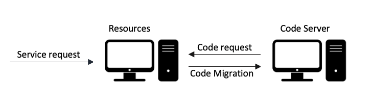

COD is the sixth, the final constraint also the only optional constraint in the REST style.
COD means a server can extend the functionality of a client on runtime by downloading and executing code in the form of applets or scripts (like Java Applets (deppreciated), JavaScript) and recent WebAssemply. This executing is very common in webpages, when browser accesses a webpage, it almost always downloads a lot of JavaScript specific to the webpage and extends the functionality of browser on runtime through COD.

For instance, when filtering friend’s name on Facebook, a JavaScript code that can add different kinds of filters to the friend list. This code gets from COD. The functionality is not pre-installed in the browser, but something can get when loading Facebook’s webpage.
A client can download a JavaScript, Java Applet (depreciated) or Flash Application to encrypt communication between server and client so servers are not aware of encryption and key in this process.
Java Applets were small applications that compiles to Java bytecode and delivered to users in the form of Java bytecode. Not so popular since 2013.
Flash Adobe Flash Player is a runtime that executes and displays content from a provided SWF file, although it has no in-built features to modify the SWF file at runtime. It can execute software written in the ActionScript programming language which enables the runtime manipulation of text, data, vector graphics, raster graphics, sound, and video.
JavaScript is the programming language for web, JavaScript can update and change both HTML and CSS, JavaScript can calculate, manipulate and validate data. JavaScript is the dominant client-side scripting language of the Web, with 97% of websites using it for this purpose. Scripts are embedded in or included from HTML documents and interact with the DOM. All major web browsers have a built-in JavaScript engine that executes the code on the user's device, including Facebook and YouTube, Google maps and eBay.
JavaScript is the most popular programming language because it is created out of necessity, easy to learn, free and open community, allowing developers to quickly create apps. JavaScript with AJAX technique and jQuery library is greatly simplifies JavaScript programming. AJAX enable reading data from a server after the webpage has loaded, update a web page without reloading the page, send data to a web server in the background.
COD simplifies clients and allows extension of client functionality by reducing the number of features required to be pre-implemented. COD reduces the cost caused by carrying code modules not needed in the near future. Allowing features to be downloaded after deployment improves system extensibility.
COD is the only optional constraint of REST, so architectures that do not use this still be considered RESTful.
It allows clients to be flexible because server will decide how specific items need to be handled on the client side. So that the underlying server doesn’t aware of specific encryption methods used to encrypt the client-server communication.
COD can also be applied to services and service consumers. Service design can enable the server to dynamically defer some portion of logic to the service client programs
Web browsers can allow servers to return scripts or links that can be executed at the client side. This code execution help to expand the capabilities of the client without needing the user to install new client software.
In COD, client components can access to resources but don’t know how to process them. It sends a request to a remote server for a code presenting that know-how, receives that code and then executes it locally
Code privacy is enhanced. Since code module will only be added when needed and deleted when they become useless, irrelevant hosts will be less likely to spy on the important algorithms from the decision modules. In this case, the threat that agent code will suffer from malicious tampering is reduced.
In case that a malicious attack on agent code really happens and has been detected, CoD will be helpful in recovering process.
The down side of using COD is reduces the visibility of the underlying API, and not every API prefers these kind of flexibility so it is only an optional constraint within REST.
It also incurs additional security challenges, especially when looking into the issue of verifying agent code integrity after the code as a whole has been changed.
The server assumptions about the nature of the client and its ability to execute whatever code is passed.
The Payload of requests can be quite large due to passing JSON or XML files with lots of queries depending on the data you want to retrieve which can affect performance.
REST, in its most common implementation, has no discoverability. It will be challenging to know how to use the API in case the API doesn’t have documentation.
Althought COD has GET, POST methods. It's not suitable for command-like functions and instead functions best for simple actions, such as create, read, update, and delete ( CRUD).
COD is classified as optional constraint because it does have a purpose in the architectural design of a system that encompasses multiple organizational boundaries. It means that the architecture only gains the benefit (and suffers the disadvantages) of the optional constraints when they are known to be in effect for some realm of the overall system.
For example, if all of the client software within an organization is known to support Java applets, then services within that organization can be constructed such that they gain the benefit of enhanced functionality via downloadable Java classes. At the same time, however, the organization’s firewall may prevent the transfer of Java applets from external sources, and thus to the rest of the Web it will appear as if those clients do not support code-on-demand. An optional constraint allows us to design an architecture that supports the desired behaviour in the general case, but with the understanding that it may be disabled within some contexts.
Among Architectural Styles for APIs such as REST, GraphQL, RPC, SOAP, gRPC, Falcor, REST is by far the most commonly used architectural style with 80% given its prominence in API design over the last decade plus, but sometimes there are trade-offs with other architectural demands (simplicity, loose-coupling, network efficiency, information abstraction, resource granularity, convenience). So it is necessary to determine which demands is priority to choose the suitable Architectural style for specific API.
A client process requires a remote program, which is downloaded to the client’s local executing environment. It is a pull-based approach to perform alien codes. Java-applets are a popular implementation of this model. This client environment would raise concern about trust and security.